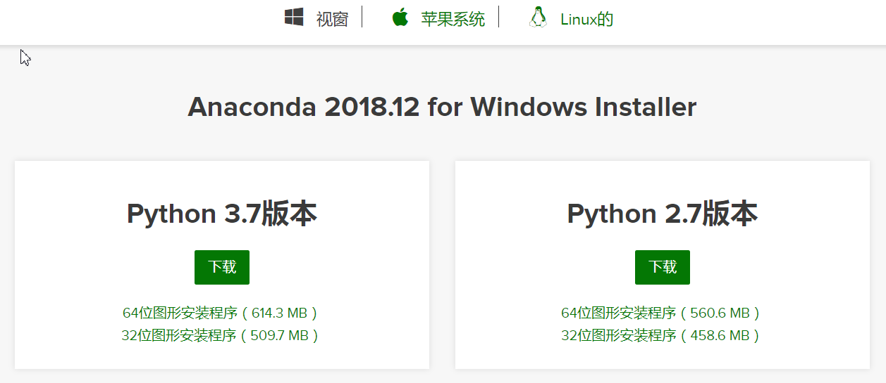
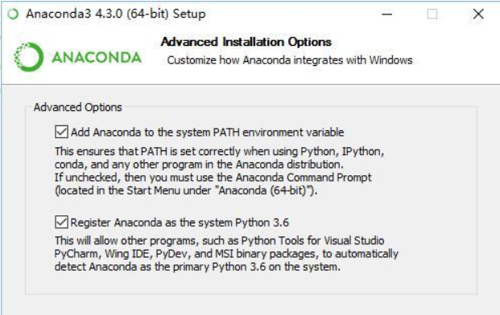
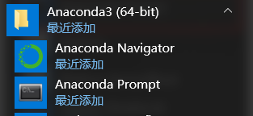
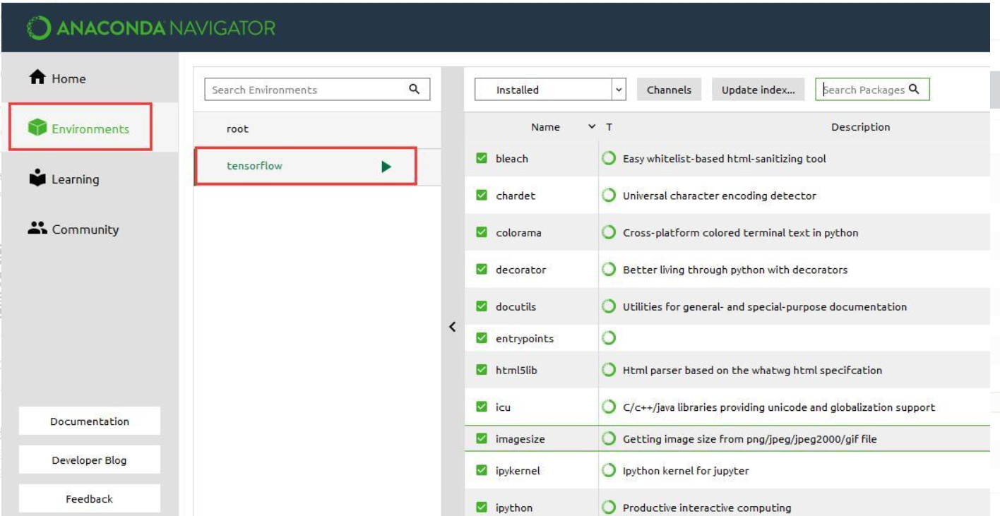
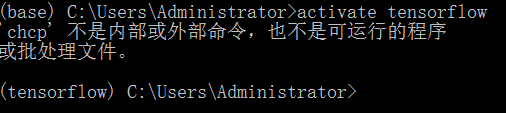
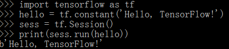
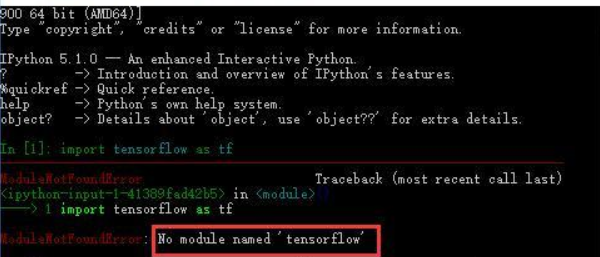
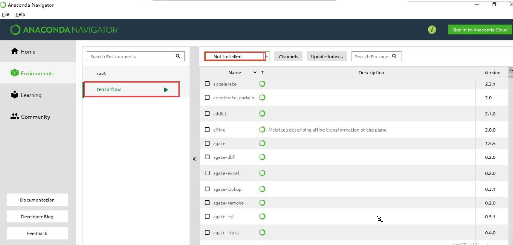

1.安装Anaconda 选择相应的Anaconda进行安装,根据自己系统选择版本，我选的是Python 3.7 version 64-Bit  和普通软件安装一样，选择全部默认即可，注意勾选将 python3.7添加进环境变量  安装好Anaconda之后通过以下命令来查看Anaconda已经安装哪些包。 运行开始菜单-Anaconda3-Anaconda Prompt conda list 可以看到已经安装了 numpy,sympy等常用包。
2.安装Tensorflow TensorFlow目前在Windows下只支持Python3.5版本。
（1）打开Anaconda Prompt，输入清华仓库镜像，这样更新会快一些：  conda config --add channels https://mirrors.tuna.tsinghua.edu.cn/anaconda/pkgs/free/ conda config --set show_channel_urls yes
(2)同样在Anaconda Prompt中利用Anaconda创建一个python3.5的环境，环境名称为tensorflow ，输入下面命令： conda create -n tensorflow python=3.5 运行开始菜单->Anaconda3—>Anaconda Navigator，点击左侧的Environments ，可以看到tensorflow的环境已经创建好了。 
(3)在anaconda prompt中启动tenso环境 activate tensorflow 
当不使用TensorFlow环境时 用deactivate命令关闭环境
(4)安装CPU版本的TensorFlow pip install --upgrade --ignore-installed tensorflow 这样TensorFlow就安装好了
(5)测试TensorFlow 在Anaconda Prompt中启动tensorflow环境，并进入python环境。 ！ 
{kind=link}
3.其他问题 或许到这里我们并没有满足，我们在Anaconda自带的ipython 和Spyder中import tensorflow的时候一直失败，提示 No module named ‘tensorflow’ ，如下图，那是因为我们没有在tensorflow的环境下打开它们。 
为了能在ipython 和Spyder中使用tensorflow，我们需要在tensorflow的环境中安装这两个的插件。
打开 Anaconda Navigator，选择Not installed，找到 ipython和Spyder并安装，笔者这里已经安装好，所以在这个页面没有显示。 
安装好插件后，我们需要测试一下。
在Anaconda Prompt中启动tensorflow环境，并运行ipython，import tensorflow发现成功:
同样，在Anaconda Prompt中启动tensorflow环境，并运行Spyder，等一会儿后会启动Spyder IDE，import tensorflow 同样成功:
一定要运行 Spyder(tensorflow)